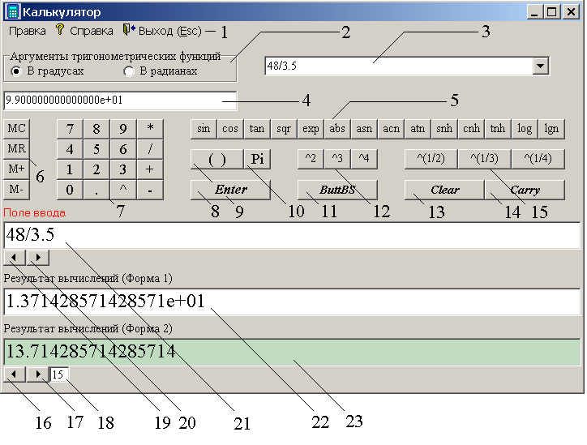
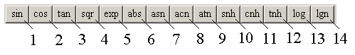
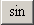
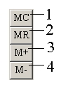
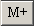
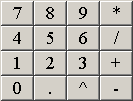
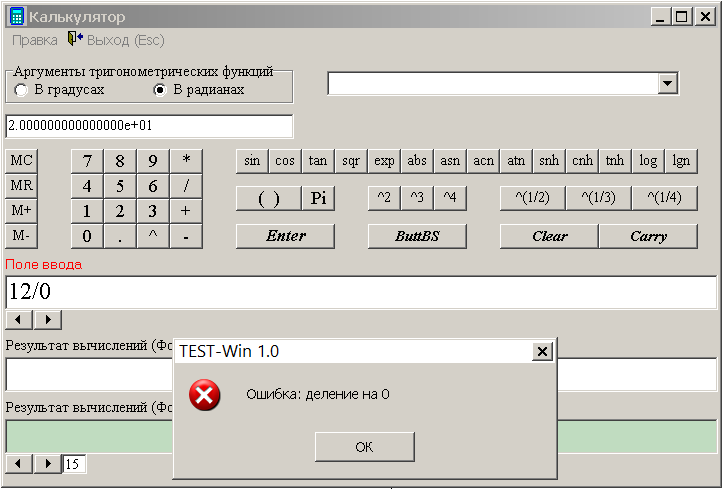
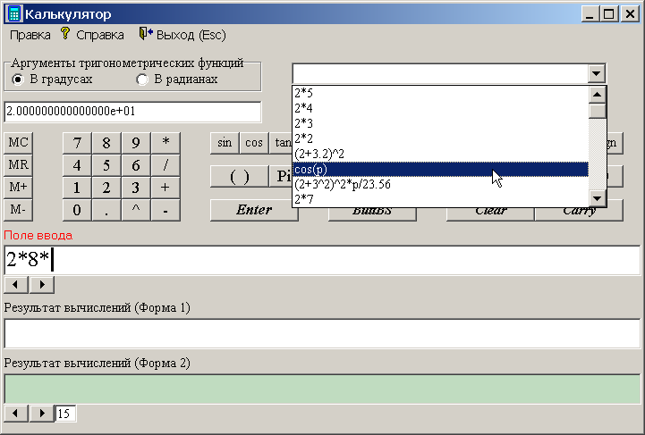
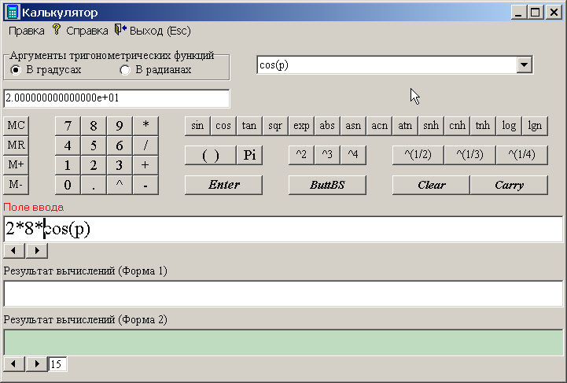

јЋ№ ”Ћя“ќ–
Ќажатие на кнопку
†или выбор соответствующей позиции
во всплывающем
меню в различных режимах работы приводит к вызову јЋ№ ”Ћя“ќ–ј
(рис. 1).
јЋ№ ”Ћя“ќ– предназначен дл€ выполнени€ тех же действий, что и
обычный калькул€тор. ќн выполн€ет основные арифметические действи€, такие, как
сложение и вычитание, а также функции инженерного калькул€тора, например
нахождение логарифмов и тригонометрических функций.
ќрганы управлени€
ћеню јЋ№ ”Ћя“ќ–ј
¬вод математических функций
”правление пам€тью
”правление вводом данных
ƒиагностика ввода данных
ѕеренос результата вычислений в поле ввода
ѕеренос последних операций в поле ввода
»зменение точности представлени€ результатов
ѕеренос
результатов вычислений в –≈ƒј “ќ–
ƒопускаемые
форматы чисел
ќрганы управлени€
ќрганы управлени€ јЋ№ ”Ћя“ќ–ќћ
представлены на рис. 1.

–ис. 1
„ислами на рис. 1 обозначены:
- ћеню јЋ№ ”Ћя“ќ–ј;
- ѕереключатель режима работы с тригонометрическими
функци€ми Уаргумент в радианахФЂУаргумент
в градусахФ;
- ¬ыпадающий список последних операций;
- ќкно, отражающее содержимое внутренней пам€ти јЋ№ ”Ћя“ќ–ј;
- √руппа кнопок встроенных функций;
- √руппа кнопок управлени€ внутренней пам€тью јЋ№ ”Ћя“ќ–ј;
- ќсновна€ группа кнопок ввода;
- нопка, предназначанна€
дл€ вычислени€ введенного выражени€ (альтернатива Ц клавиша
клавиатуры† <Enter>);
- нопка вставки круглых скобок;
- нопка ввода числа
π
(число† π† в поле ввода
изображаетс€ латинской буквой p);
- нопка, дублирующа€ клавишу клавиатуры <Backspace>;
- √руппа кнопок возведени€ в степень;
- нопка очистки пол€ ввода (альтернатива Ц клавиша
<Space>);
- нопка переноса результата вычислений в поле ввода
(альтернатива Ц комбинаци€ клавиш <Ctrl+Enter>);
- √руппа кнопок возведени€ в степень;
- нопка уменьшени€ точности результатов вычислений
(определ€етс€ числом цифр после зап€той в научном представлении результата
вычислений);
- нопка увеличени€ точности результатов вычислений
(определ€етс€ числом цифр после зап€той в научном представлении результата
вычислений);
- »ндикатор текущего числа цифр после зап€той в научном представлекнии
результата вычислений;
- нопка увеличени€ высоты шрифта в пол€х ввода и
вывода;
- нопка уменьшени€ высоты шрифта в пол€х ввода и
вывода;
- ѕоле ввода;
- ѕоле вывода результата вычислений† в научном представлекнии;
- ѕоле вывода результата вычислений в виде дес€тичной
дроби.
ƒалее рассмотрим подробнее
некоторые органы и группы органов управлени€ јЋ№ ”Ћя“ќ–ј.
ћеню
јЋ№ ”Ћя“ќ–ј
ћеню јЋ№ ”Ћя“ќ–ј
представлено на рис. 2
–ис. 2
¬ыбор позиции УѕравкаФ приводит к по€влению
выпадающего меню с двум€ позици€ми:
- У опировать
результатФ (альтернатива Ц нажатие комбинации клавиш <Ctrl+Ins>) Ц копировать
результат вычислений в буфер обмена операционной системы;
- У¬ставитьФ
(альтернатива Ц нажатие комбинации клавиш <Shift+Ins>) Ц вставить информацию из буфера обмена
операционной системы в позицию пол€ ввода, на которую указывает курсор в
этом поле.
ѕозици€ У—правкаФ предназначена дл€ вызова инструкции пользовател€ по работе
с јЋ№ ”Ћя“ќ–ќћ.
ѕозици€ У¬ыходФ (альтернатива Ц нажатие на клавишу клавиатуры <Esc>) предназначена дл€ выхода из јЋ№ ”Ћя“ќ–ј.
¬вод
математических функций
√руппа кнопок ввода встроенных
функций јЋ№ ”Ћя“ќ–ј (рис. 1, поз. 5) представлена более детально на рис. 3. Ёта
группа кнопок предназначена дл€ автоматизированного ввода имен встроенных
функций јЋ№ ”Ћя“ќ–ј.

–ис. 3
÷ифрами на рис. 3 обозначены:
-

†- кнопка ввода имени функции функции У—инусФ (альтернатива Ц ввод с помощью клавиатуры
последовательности символов Уsin()Ф);
-
†- кнопка ввода имени функции† У осинусФ
(альтернатива Ц вводас помощью клавиатуры
последовательности символов Уcos()Ф);
-
†- кнопка ввода имени функции† У“ангенсФ
(альтернатива Ц ввод с помощью клавиатуры последовательности символов Уtan()Ф);
-
†- кнопка ввода имени функции У вадратный кореньФ (альтернатива Ц
ввод с помощью клавиатуры последовательности символов Уsqr()Ф);
-
†- кнопка ввода имени функции УЁкспонентаФ (альтернатива Ц ввод с
помощью клавиатуры последовательности символов Уexp()Ф);
-
†- кнопка ввода имени функции УћодульФ (альтернатива Ц ввод с
помощью клавиатуры последовательности символов Уabs()Ф);
-
†- кнопка ввода имени функции УјрксинусФ (альтернатива Ц ввод с
помощью клавиатуры последовательности символов Уasn()Ф);
-
†- кнопка ввода имени функции УјрккосинусФ (альтернатива Ц ввод с
помощью клавиатуры последовательности символов Уacn()Ф);
-
†- кнопка ввода имени функции УјрктангенсФ (альтернатива Ц ввод с
помощью клавиатуры последовательности символов Уatn()Ф);
-
†- кнопка ввода имени функции У—инус гиперболическийФ
(альтернатива Ц ввод с помощью клавиатуры последовательности символов Уsnh()Ф);
-
†- кнопка ввода имени функции У осинус гиперболическийФ
(альтернатива Ц ввод с помощью клавиатуры последовательности символов Уcnh()Ф);
-
†- кнопка ввода имени функции У“ангенс гиперболическийФ
(альтернатива Ц ввод с помощью клавиатуры последовательности символов Уtnh()Ф);
-
†- кнопка ввода имени функции УЋогарифм дес€тичныйФ (альтернатива
Ц ввод с помощью клавиатуры последовательности символов Уlog()Ф);
-
†- кнопка ввода имени функции УЋогарифм натуральныйФ
(альтернатива Ц ввод с помощью клавиатуры последовательности символов Уlgn()Ф).
”правление пам€тью
√руппа кнопок управлени€
внутренней пам€тью јЋ№ ”Ћя“ќ–ј (рис. 1, поз. 6) представлена более детально на рис. 4.

–ис. 4
÷ифрами на рис. 4 обозначены:
-
†- кнопка очистки
внутренней пам€ти јЋ№ ”Ћя“ќ–ј;
-
†- кнопка
копировани€ содержимого внутренней пам€ти јЋ№ ”Ћя“ќ–ј в поле
ввода (поз. 21 на рис. 1);
-

†- кнопка добавлени€
результата вычислени€ к
содержимому внутренней пам€ти јЋ№ ”Ћя“ќ–ј;
-
†- поле вычитани€ результата вычислений из
содержимого внутренней пам€ти јЋ№ ”Ћя“ќ–ј.
ќкно, отражающее текущее
содержимое внутренней пам€ти јЋ№ ”Ћя“ќ–ј,
изображено в поз. 4 на рис. 1.
”правление вводом данных
ќсновна€ группа кнопок ввода (рис. 1, поз. 7) представлена на рис. 5.

–ис. 5
нопки основной группы ввода
дублируют клавиши клавиатуры, соответствующие изображени€м на этих кнопках:
- нопки с цифрами Ц предназначены дл€ ввода цифр;
-
†- нопка ввода
дес€тичной точки (зап€той);
-
†- нопка ввода
символа возведени€ в степень;
-
†- нопка ввода
символа умножени€;
-
†- нопка ввода
символа делени€;
-
†- нопка ввода
символа сложени€;
-
†- нопка ввода
символа вычитани€.
ƒиагностика
ввода данных
јЋ№ ”Ћя“ќ– обладает развитой диагностикой. ѕример реакции на
ошибку ввода показан на рис. 6.

–ис. 6
ѕеренос
результата вычислений в поле ввода
≈сли поле вывода результата (рис. 1, поз. 22 и 23) содержит результат вычислений, то
нажатие на кнопку УCarryФ (рис. 1,
поз. 14) или использование комбинации клавиш <Ctrl+Enter> приводит к следующей последовательности действий:
ѕеренос последних операций в поле ввода
¬ыпадающий список последних
операций (рис. 1, поз. 3) содержит вычисленные ранее
выражени€ (рис. 7).

–ис. 7
¬ыбор из списка последних
операций строки приводит к переносу этой строки в поле ввода (рис. 8).

–ис. 8
»зменение точности представлени€ результатов
нопки уменьшени€ и увеличени€
точности результатов вычислений (рис. 1, поз 16 и 17).
“очность результатов вычислений определ€етс€ числом цифр после зап€той в
научном представлении числа. “екущее число цифр после зап€той в научном
представлении числа показывает индикатор (рис. 1, 18).
ѕеренос результатов вычислений в –≈ƒј “ќ–
ѕеренос результата вычислени€ в –≈ƒј “ќ– возможен через буфер обмена
операционной системы. опирование результата вычислений в буфер обмена можно осужествить двум€ способами.
—пособ 1. ¬ этом случае
копирование результата вычислений в буфер обмена осуществл€етс€ с помощью
позиции ћеню јЋ№ ”Ћя“ќ–ј У опировать результатФ (рис.
2).
—пособ 2. — помощью стандартных
приемов, прин€тых в операционной системе Microsoft Windows,
выделить текстовый блок, содержащий результат вычислений (рис
1, поз. 22 и 23) и скопировать этот блок в буфер обмена операционной
системы (комбинации клавиш <Ctrl+Ins> или
<Ctrl+C>).
ѕосле копировани€ результата
вычислений необходимо выйти из јЋ№ ”Ћя“ќ–ј
и войти в –≈ƒј “ќ–. «атем следует
подвести курсор к месту в редактируемом файле, в которое необходимо вставить
результат вычислений, и вставить содержимое буфера обмена операционной системы.
ƒопускаемые форматы чисел
ƒопускаютс€ следующие форматы
записи чисел:
|
2514
|
2.514e3
|
251400e-2
|
|
-25
|
-25.1400
|
-0.251e-10
|
ѕомимо этого, число π можно записывать в виде латинской буквы УpФ.
ѕример: выражение 2*p
будет восприниматьс€ как удвоенное число†
π.